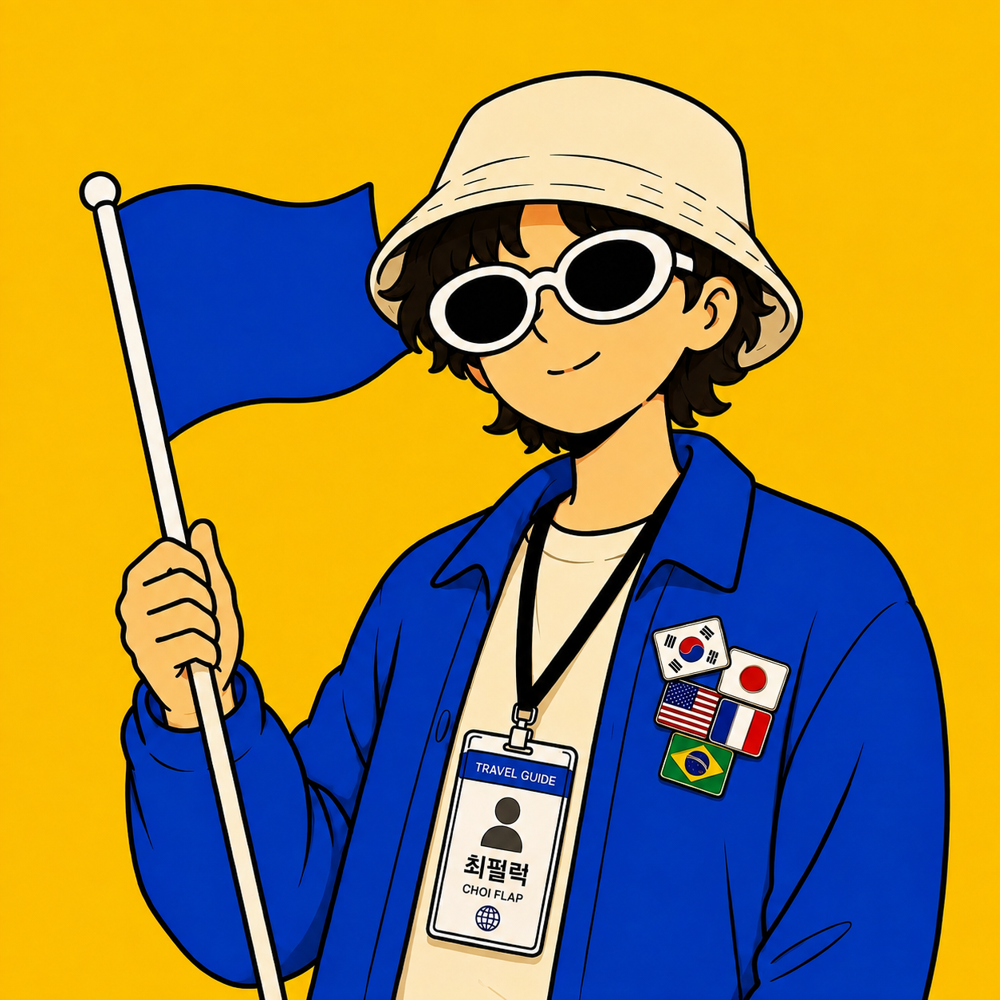

오늘은 어디 깃발 들까
왼쪽에서 지역과 목적을 고르고 코스를 뽑아보세요.
🚩
지역 고르고 코스 뽑기를 누르면
여기에 도보 동선이 그려집니다.
여기에 도보 동선이 그려집니다.
동선 지도
즐겨찾기 장소만 표시됩니다 — AI 추천 장소는 좌표 확정 전이라 지도에서 제외. 배경지도 © OpenStreetMap

즐겨찾기 -곳에서 지역·목적에 맞는 코스를 뽑고, 게시용 초안까지 한 번에.
왼쪽에서 지역과 목적을 고르고 코스를 뽑아보세요.
즐겨찾기 장소만 표시됩니다 — AI 추천 장소는 좌표 확정 전이라 지도에서 제외. 배경지도 © OpenStreetMap